달콤한 크리스마스! 아이들이 직접 만든 먹는 아이스크림 콘 트리1🎄
안녕하세요, 생각공작소입니다. :)
12월, 달콤한 크리스마스가 찾아왔습니다. 🎄
이번 달 아이들은 먹을 수 있는 크리스마스 트리를 만들었어요!
바삭한 아이스크림 콘 위에
달콤한 초콜릿과 알록달록 과자들로 장식한
세상에서 가장 맛있는 트리 만들기 시간이었답니다.🍦🎅
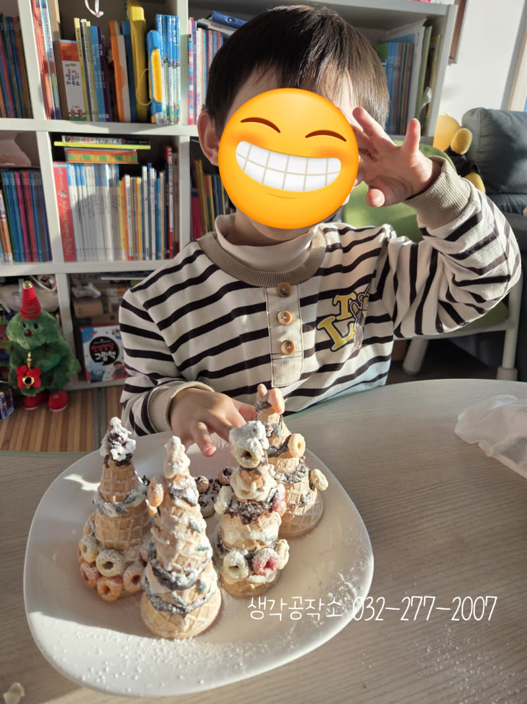
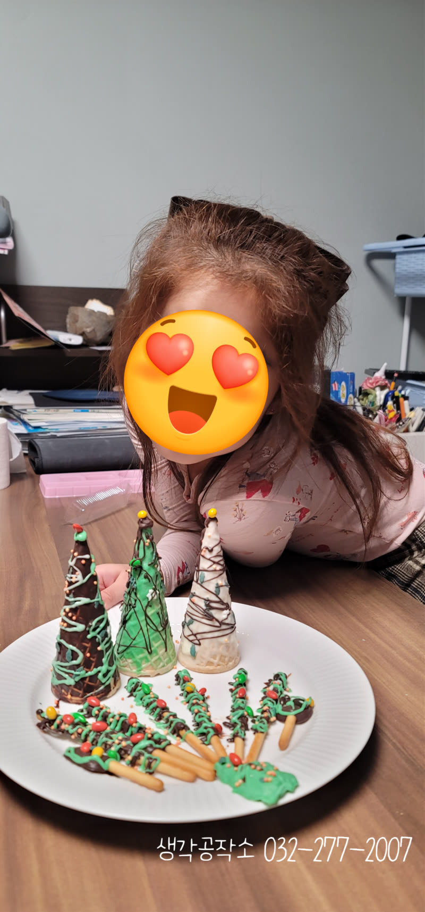
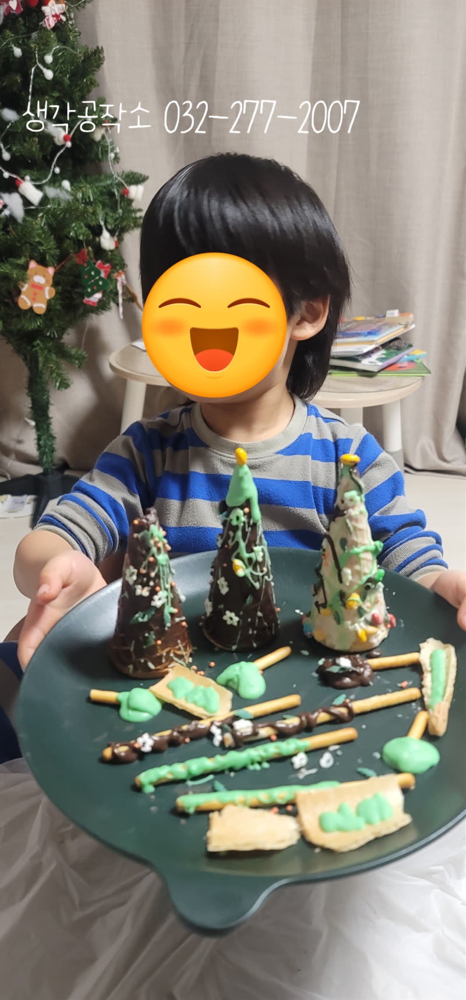
"선생님, 이거 진짜 먹을 수 있어요?"
"당연하지! 우리가 직접 만들고 먹는 거야!"
아이들의 눈이 반짝였습니다. ✨
테이블 위에 놓인 아이스크림 콘, 녹인 초콜릿과 초록색 아이싱,
엠앤엠즈, 후르트링, 과자 스틱, 슈가파우더까지.
아이들 앞에 펼쳐진 재료들만으로도
벌써 크리스마스가 시작된 것 같았습니다.
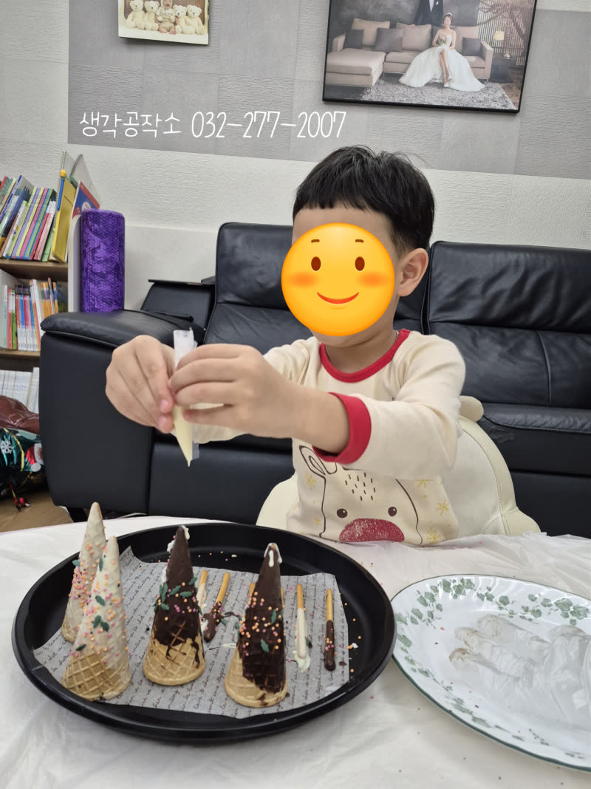
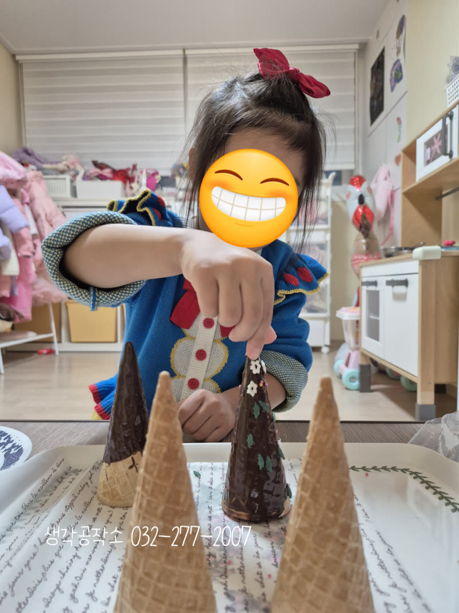
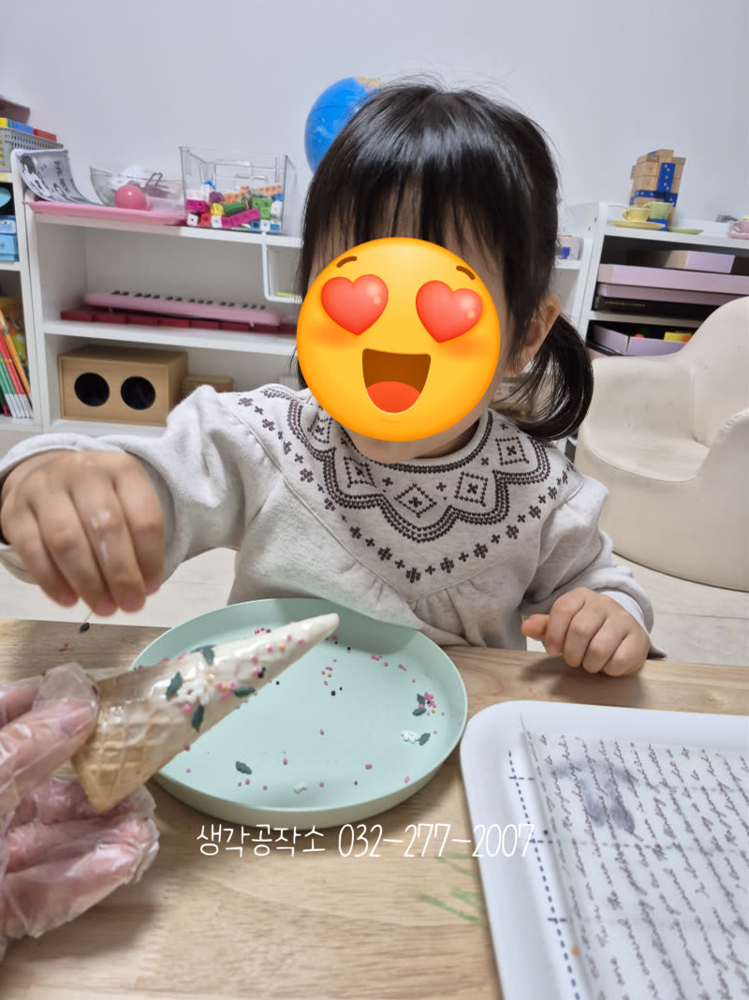
먼저 아이스크림 콘에 달콤한 초콜릿을 듬뿍 입혔어요.
손에 묻는 촉감도 느끼고, 초콜릿의 달콤한 향기도 맡으며
아이들은 자신만의 트리를 꾸미기 시작했습니다.
"저는 초록색으로 할래요!" "저는 초콜릿이 더 좋아요!"
갈색 초콜릿, 초록색 아이싱으로
저마다 다른 색의 트리가 만들어졌어요. 🌲
손끝으로 느끼는 촉감, 코끝으로 맡는 달콤한 향기,
눈으로 보는 알록달록한 색감.
아이들의 오감이 모두 깨어나는 순간이었습니다.
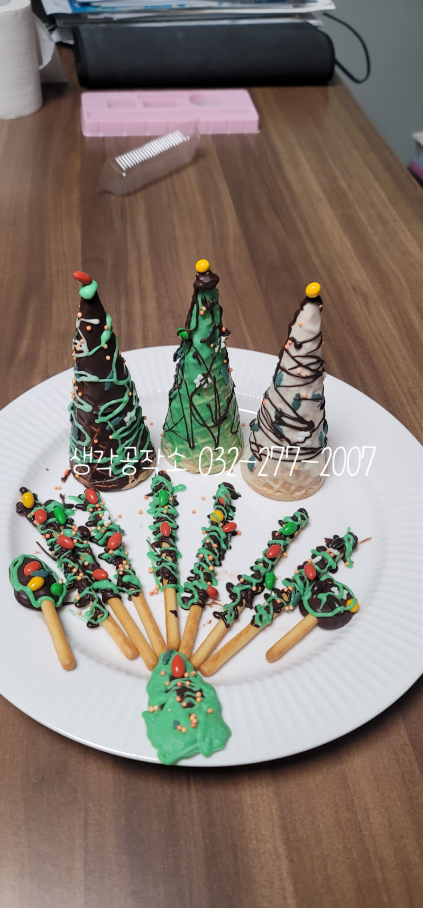
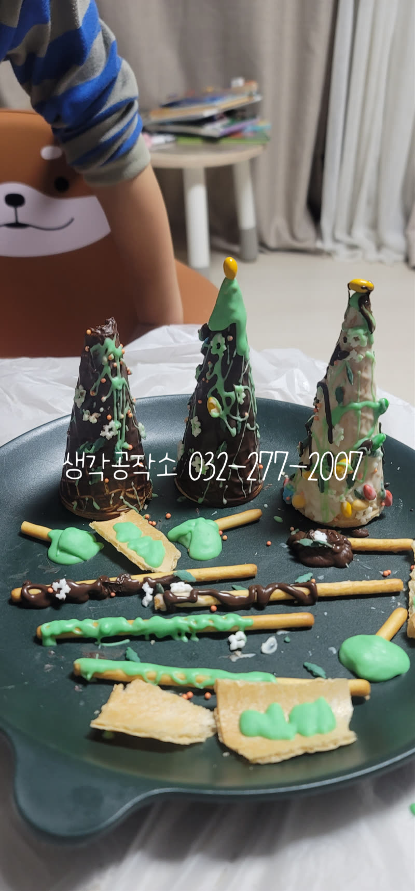
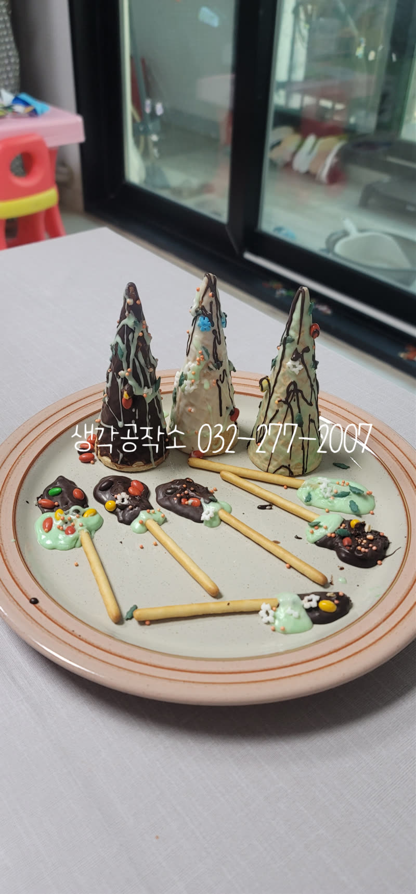
트리 위에는 작은 별을 올리고,⭐
엠앤엠즈와 후루트링으로 알록달록 장식했어요.
과자 스틱으로는 트리 주변의 작은 울타리도 만들고,
귀여운 눈사람도 표현했답니다. ☃️
그리고 마지막 마법!
하얀 슈가파우더를 살살 뿌리자 트리 위에 눈이 소복이 내렸습니다. ❄️
"우와! 진짜 눈이다!" "크리스마스에 눈 오는 것 같아요!"
아이들은 자신이 만든 트리를 보며 환하게 웃었습니다.
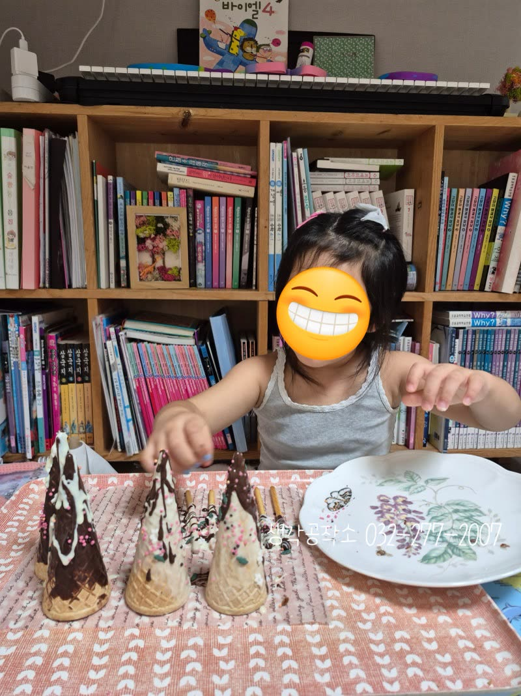
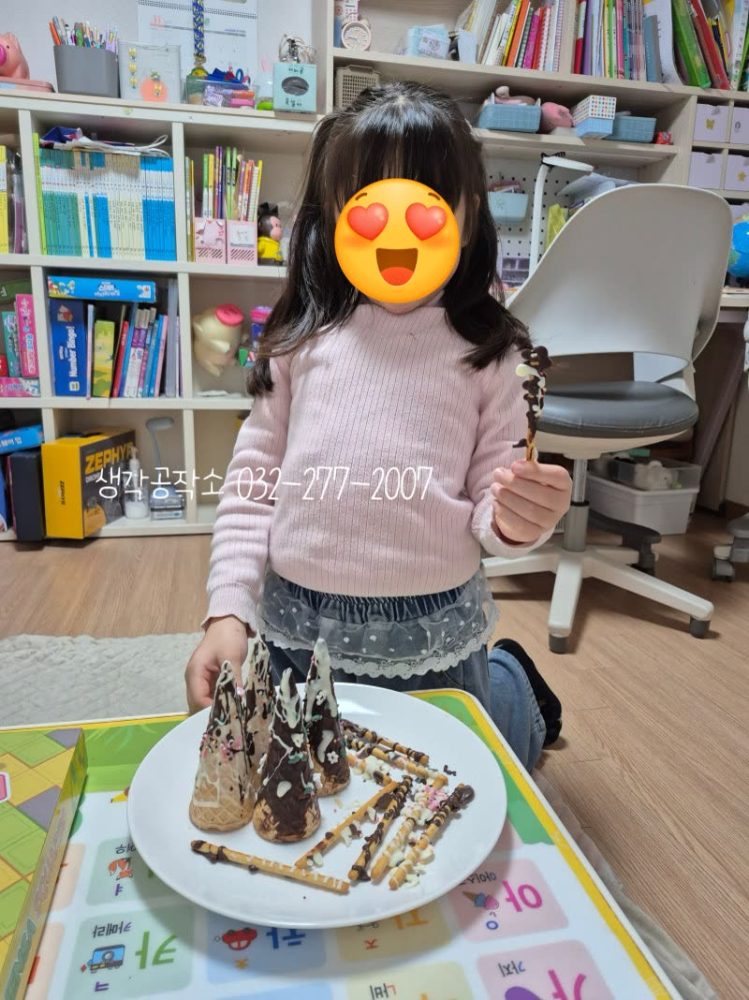
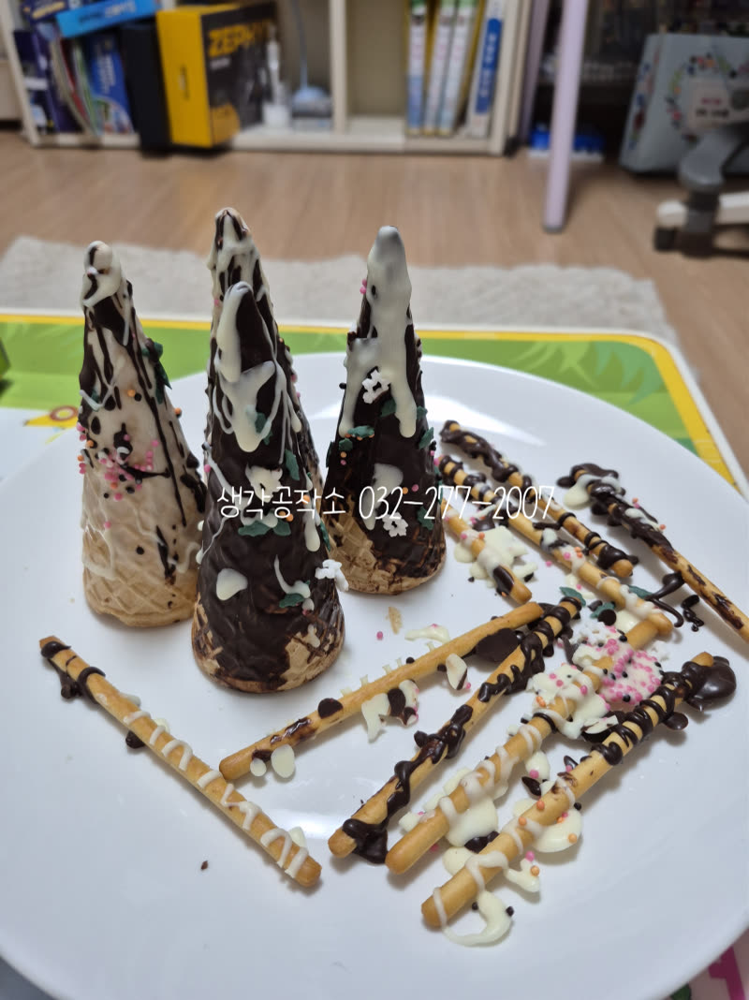
완성된 트리를 앞에 두고 아이들은
어떤 부분부터 먹을지 고민에 빠졌어요.
"별부터 먹을까?" "저는 울타리부터요!"
한 입 베어 무는 순간, 아이들의 얼굴에 행복이 가득 번졌습니다. 😊
달콤한 맛, 바삭한 식감, 입 안 가득 퍼지는 초콜릿 향.
오감으로 느끼며 직접 만든 트리는 그 어떤 선물보다 특별했습니다.
이번 아이스크림 콘 트리 만들기는
단순히 과자를 먹는 활동이 아니었어요.
촉감으로 재료를 만지고, 시각으로 색을 구별하며,
후각으로 향을 맡고, 미각으로 맛을 느끼고,
청각으로 과자가 부서지는 소리까지.
아이들의 오감이 모두 자극되며, 집중력과 창의력,
소근육 발달까지 자연스럽게 이루어진 시간이었답니다.
무엇보다 아이들이 "제가 만들었어요!"라고 자랑스럽게 말하며
환하게 웃는 모습이 가장 아름다웠습니다. ✨
아이들의 오감을 자극하고 창의력과 집중력을
자연스럽게 키우는 맞춤형 프로그램입니다.
단순히 만들기를 가르치는 것을 넘어,
아이들이 스스로 탐색하고 표현하며
성장할 수 있도록 세심하게 이끌어갑니다.
오감 쑥쑥! 생각 쑥쑥!
📞 생각공작소 032-277-2007